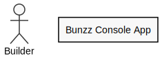

Fundamentals
What is "Module" in Bunzz?
"Module" is an extended concept of smart contracts in Bunzz space.
You can generate various smart contracts by making combinations of modules.
For example, if you pick up NFT(ERC721) module and Marketplace module, you can create an NFT marketplace 
What is the SDK for?
If you use bunzz, you can deploy smart contracts easily.
But how can your frontend applications use them?
You need to learn the following when you try to connect your app with the blockchain world.
- What client library is the best? web3.js or ethers.js?
- What is "ABI"?
- What is the "address" of my contract?
- What is chain ID?
- How can I get to know the transaction status?
- etc...
But don't worry!
Bunzz SDK cares all of the above instead of you 
You can pick up your API key from Bunzz Console, and use simple & powerful APIs immediately.
For details, refer the SDK section.
Structure of Bunzz project

- Structure of bunzz project